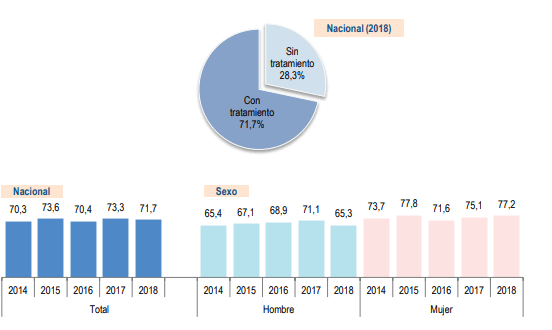
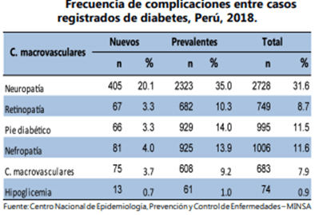

Gráfico 1
Gráfico 1Gráfic 2:Personas de 15 y más años de edad con diagnóstico de diabetes mellitus que recibieron tratamiento en los últimos 12 meses, según sexo y región natural, 2014-2018, Perú
Gráfico 3
La diabetes mellitus tipo 2 es una enfermedad crónica no transmisible que aparece cuando el organismo no produce suficiente insulina o cuando esta no es utilizada de forma eficiente. Como la insulina es la hormona encargada de controlar la cantidad de glucosa en la sangre, su deficiencia causa hiperglucemia.
La diabetes de tipo 2 no suele mostrar síntomas hasta en fases tardías, en las cuales ya ha causado enfermedades en los riñones, la retina, el hígado, etc.
En el Perú, la diabetes mellitus es un problema de salud pública que afecta aproximadamente al 3.6% de la población [6]. Además, según la OMS, en el 2016 esta enfermedad no transmisible representó el 2% del total de muertes de dicho año (gráfico 1)
Pese al incremento de los costos, el tratamiento de los pacientes diagnosticados con esta enfermedad sigue sin ser suficiente. En el siguiente gráfico, podemos observar que más de un 20% de las mujeres diagnosticadas con esta enfermedad no han recibido tratamiento alguno. (gráfico 2)
El mayor obstáculo para combatir la diabetes es la poca difusión de las consecuencias que tiene esta enfermedad, ya que un 54% de los casos diagnosticados de diabetes de tipo 2 han presentado al menos una complicación, siendo la neuropatía la complicación más frecuente. (gráfico 3)
Gráfico 1